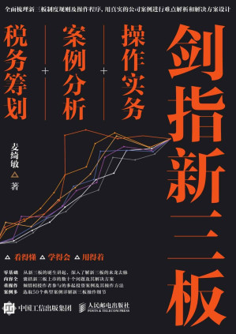

|  |
剑指新三板：操作实务+案例分析+税务筹划
麦绮敏
|
前言
第1篇 新三板基础篇
第1章 零基础学新三板
1.1 为什么会有新三板
1.2 新三板与主板、中小板和创业板
1.2.1 主板市场
1.2.2 中小板市场
1.2.3 创业板市场
1.2.4 新三板市场
1.2.5 新三板的市场定位及与其他板的关系
1.3 新三板的演变和发展阶段
1.3.1 试点阶段
1.3.2 全国扩容阶段
1.3.3 分层发展阶段
1.4 企业在新三板挂牌的其他作用
1.4.1 有利于提高企业融资能力
1.4.2 有利于提升公司股份价值
1.4.3 有利于提高企业品牌知名度
1.4.4 有利于提升企业的管理经营能力
1.4.5 股权激励，留住核心员工
1.4.6 有利于企业快速进入主板市场
1.4.7 新三板转型创业板上市公司的成功案例
1.5 企业在新三板挂牌可享受的优惠政策
第2章 新三板的法律制度
2.1 新三板信息披露制度
2.1.1 信息披露的功能与作用
2.1.2 新三板信息披露制度的具体操作流程
2.1.3 一般性规定解读
2.1.4 定期报告制度
2.1.5 临时报告制度
2.1.6 监管措施和违规处分
2.1.7 新三板持续信息披露业务指南
2.2 新三板交易主体制度
2.2.1 投资者的资格
2.2.2 主办券商的责任
2.3 新三板交易制度和规则
2.3.1 交易制度的一般规定
2.3.2 新三板股票交易费用
2.3.3 转让信息
2.3.4 监控与异常情况处理
2.4 做市商制度
2.4.1 什么是做市商制度
2.4.2 新三板的做市商制度特点
2.4.3 做市商的条件、义务和权利
2.4.4 NASDAQ市场做市商制度
2.4.5 做市商制度的意义
2.5 监管新三板的目标分析
2.5.1 保障投资者
2.5.2 资源的最优配置
2.5.3 投资者保障与金融资源最优配置的关系
2.6 政府对新三板的监管
2.6.1 对新三板设立的监管
2.6.2 对新三板规则的干预
2.6.3 对新三板惩戒行为的审查
2.6.4 对新三板的调查和处罚
2.6.5 对挂牌公司、证券公司和交易过程的监管
2.7 新三板的自律监管
2.8 新三板信息监管法律制度
2.8.1 信息披露的重点监管区域
2.8.2 信息披露的违规案例
2.8.3 信息披露的违规缘于中介机构监管缺失
第3章 新三板挂牌操作实务
3.1 企业改制操作实务
3.1.1 企业股份制改造及申请挂牌条件
3.1.2 股份制改造的目的
3.2 股改流程操作实务
3.2.1 遴选中介机构
3.2.2 召开两会，通过股改决议并成立改制小组或改制机构
3.2.3 中介机构尽职调查，协助董事会或公司制定股改方案
3.2.4 股改方案提交股东会审议通过
3.2.5 全体股东作为发起人，制定并签署发起人协议
3.2.6 办理相关手续
3.2.7 办理工商登记或变更手续
3.3 企业新三板挂牌操作程序
3.3.1 公司到新三板挂牌的基本步骤
3.3.2 公司到新三板挂牌的主要流程
3.3.3 申报材料所需文件
3.3.4 律师出具法律意见书
3.4 定向增发操作程序
3.4.1 新三板定向增发的概念与要求
3.4.2 新三板全国扩容后定向增发的新趋势
3.4.3 新三板定向增发的程序
3.5 人人乐股份有限公司挂牌举例
3.5.1 确定推荐挂牌和持续督导的主办券商
3.5.2 公司改制
3.5.3 制作并申报材料
3.5.4 在全国股份转让系统办理股票挂牌业务
第2篇 新三板挂牌上市疑难问题及解决方案篇
第4章 设立及存续期出资和资产相关问题与解决方案
4.1 公司设立及存续期间股东相关疑难问题与解决方案
4.1.1 “外籍身份设立的内资企业”是否会对股份公司的持续经营、申请挂牌的主体资格产生不利影
4.1.2 企业设立及改制时，国有控股的股东履行的相关国资备案程序是否完备和合法
4.1.3 威门药业整体变更时净资产存在虚增，并用货币补足对应的出资
4.1.4 新三板公司股东是大学校友会
4.2 公司设立及存续期间出资相关问题与解决方案
4.2.1 设立时实物出资未经评估、货币出资转入个人账户
4.2.2 设立时实物出资，但实物出资未办理转移手续
4.2.3 实物出资无发票
4.2.4 实物出资未过户
4.2.5 股改程序存在瑕疵
4.3 公司设立及存续期知识产权相关问题与解决方案
4.3.1 无形资产出资比例达50%，超《公司法》规定的最高比例
4.3.2 新三板企业股东以职务发明出资的解决方案
4.3.3 资本公积转增股本，用现金补足不足金额的解决方案
4.3.4 特殊出资方式的解决方案
4.4 公司实际控制人认定等问题及解决方案
4.4.1 控股股东及实际控制人的认定问题
4.4.2 只认定一人为实际控制人的依据
4.4.3 将多人共同认定为实际控制人的依据
4.4.4 公司不存在实际控制人的依据
4.4.5 股东往来款的说明问题
4.4.6 未成年人成为公司股东的问题
4.4.7 挂牌时账上挂账应付股利的问题及解决方案
第5章 持续经营能力问题及解决方案
5.1 公司业务所需资质相关问题及解决方案
5.1.1 公司没有申领产品生产许可证
5.1.2 委托外包生产方式是否对公司生产经营产生重大影响
5.1.3 资质是否在有效期内
5.1.4 现有商业模式说明
5.1.5 报告期最近一期存在大规模亏损
5.2 公司经营范围涉及的问题及解决方案
5.2.1 报告期内发生的超经营范围经营的行为
5.2.2 公司股东所持有权益的公司与拟挂牌公司之间存在经营相近或者相似的业务
5.2.3 公司业务领域是否涉及限制领域
5.2.4 公司资产自建房无房产证
5.3 公司同业竞争相关问题及解决方案
5.3.1 公司的控股股东同时参股股份公司的子公司受到同业竞争问题的质疑
5.3.2 转让股权消除同业竞争
5.3.3 董监高对外兼职
5.3.4 多名实际控制人和高管都曾任职于相同的两个公司
5.4 公司土地房屋对公司经营造成的问题及解决发案
5.4.1 租赁无产权证的集体用地，租赁的厂房建设也没有取得相关政府部门的审批手续
5.4.2 未经批准在租赁土地上自建房屋
5.4.3 租赁房产存在权属不清而导致搬迁风险的解决方案
5.5 公司法律风险对持续经营能力的影响及解决方案
5.5.1 因买卖合同纠纷被起诉的解决方案
5.5.2 公司股东将其已质押的部分股权转让给公司的重要员工
5.5.3 重大业务合同金额巨大、工期未定的潜在风险
第6章 公司治理机制与经营规范问题及解决方案
6.1 公司管理层问题及解决方案
6.1.1 监事长是实际控制人的兄弟
6.1.2 公司董事在外兼职任同行业企业高管等职务
6.1.3 公司高管长期驻留国外
6.2 公司关联交易及资金占用、拆借问题及解决方案
6.2.1 公司以超出经审计的净资产价值将子公司的部分股权转让给实际控制人
6.2.2 如何解决公司与关联公司存在同业竞争的问题
6.2.3 公司向关联方借款
6.2.4 公司向关联方收购股权
6.2.5 公司向关联方收购借款
6.2.6 公司向关联方借款利率高于银行同类贷款利率的四倍
6.3 公司合法合规问题及解决方案
6.3.1 存在应付大额咨询费
6.3.2 报告期内存在违法行为和行政处罚
第7章 农业企业挂牌问题及解决方案
7.1 农业企业的劳动人事问题及解决方案
7.1.1 临时用工而引起的相关社保和公积金等问题
7.1.2 农业企业社保和公积金问题的案例分析
7.2 农业企业土地使用权瑕疵问题及解决方案
7.2.1 农业企业租赁土地问题
7.2.2 农业企业租赁基本农田
7.2.3 农业企业租赁基本农田无法取得房产证的房屋建筑物
7.3 农业企业大量现金交易存在问题及解决方案
7.3.1 农业企业主要客户和供应商是个人的问题
7.3.2 农业企业员工的私人卡问题
7.4 农业企业委托外协生产的问题及解决方案
7.5 生产经营许可证问题及解决方案
7.6 过分依赖非经常性损益（政府补贴）问题及解决方案
7.7 农业企业生物资产问题及解决方案
7.8 农业的行业政策和农业的行业情况
7.8.1 农业的行业政策
7.8.2 农业的行业情况
7.9 新三板首例农业企业财务造假案
第8章 新三板的税务架构与筹划
8.1 关于新三板的税收立法情况
8.1.1 针对新三板的印花税和个人所得税税收政策
8.1.2 新三板企业可以比照上市公司的税收政策执行
8.1.3 股权转让税负的影响
8.2 新三板企业挂牌前的主要税务风险点
8.3 新三板企业挂牌后资本运作的税务风险
8.4 新三板企业的税务架构筹划问题
8.4.1 国外公司搭建的税务架构
8.4.2 国外公司的税务架构避税原理
8.4.3 境内公司的税务架构
8.4.4 新三板如何利用税收优惠进行税务架构优化
8.4.5 引入境外架构
8.5 新三板企业应对策略
8.5.1 新三板企业对不同税务风险的应对策略
8.5.2 国内外关联交易的税务管理